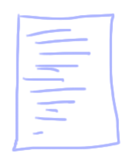
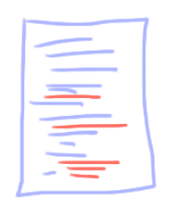
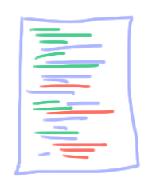
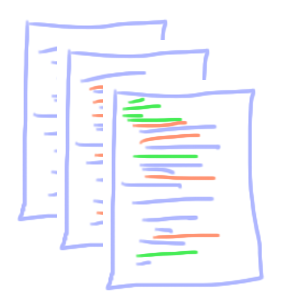
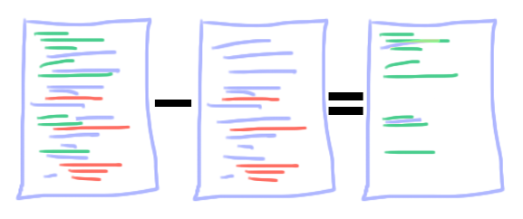

Então estamos trabalhando em um dos exercícios do CS50, por exemplo... Você começa com os arquivos que te deram no problema.
Você faz algumas alterações
Mais algumas...
Eita!! Em algum lugar dessa última versão você cometeu um erro!! E agora, com todas essas mudanças, como saber qual está causando o problema?
Já pensou se tivesse algrum programa que lembre de TODAS AS VERSÕES do seu arquivo?
Além disso destacando as diferenças:
Isso que um sistema de versionamento faz. Git é um VCS(Version Control System ou sistema de controle de versão)